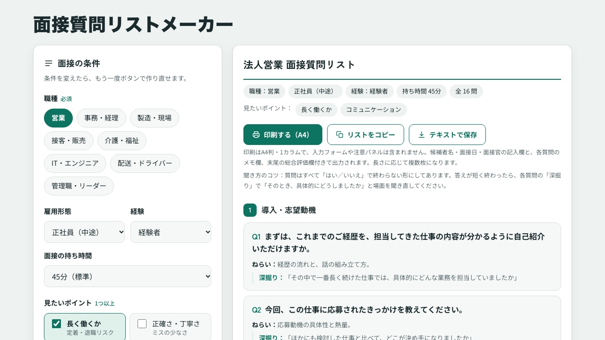
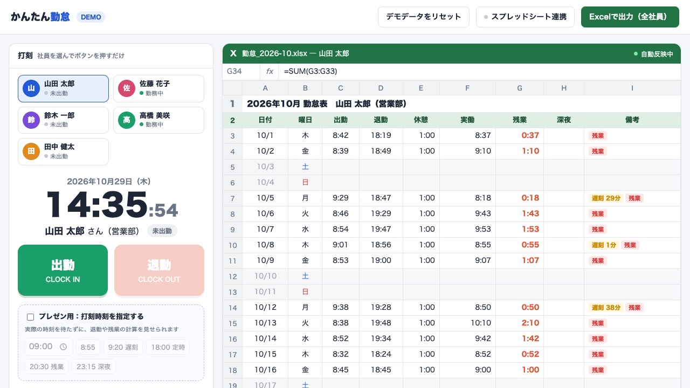

面接質問リストメーカー（人事・採用向け）

職種と「見たいポイント」を選ぶだけで、その面接専用の質問リストを作成できます。各質問には、何を見るための質問かと深掘りの聞き方が付き、A4で印刷してそのまま面接メモとして使えます。
ツールを試すWORKS
ジャンルごとにまとめています。無料で公開しているツールのほかは、自主制作のデモとサンプルです。研修・導入支援では、このような仕組みを貴社の業務に合わせて作ります。
業務の手間を減らすツールとシステムです。

職種と「見たいポイント」を選ぶだけで、その面接専用の質問リストを作成できます。各質問には、何を見るための質問かと深掘りの聞き方が付き、A4で印刷してそのまま面接メモとして使えます。
ツールを試す
打刻するだけで、実働・残業・深夜・遅刻を自動計算。Excelやスプレッドシートとの連携も可能です。ブラウザ上で実際の操作をお試しいただけます。
デモを試すLINEで予約を受け付ける仕組みです。
メニュー選択から予約完了の通知まで、LINE内で完結する流れを約30秒の動画でご覧いただけます。
企業のPRを想定した動画です。
「旅館」「スーパーマーケット」「工務店」の15秒CMをご覧いただけます。
※登場する会社や商品はすべて架空です。
どのような段階のご相談でも構いません。